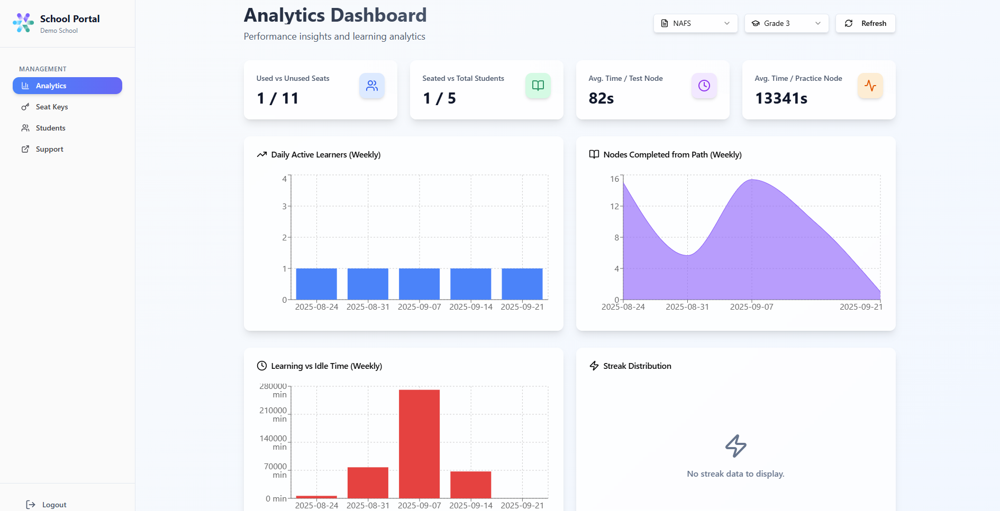
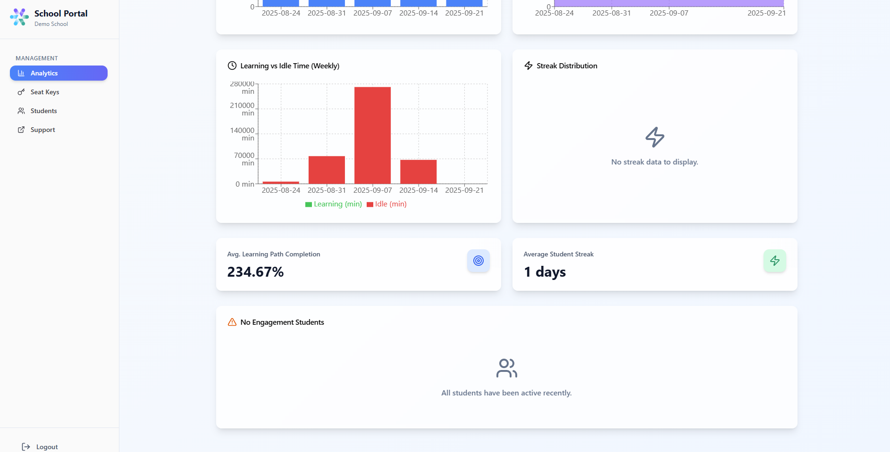

Analytics Dashboard
Purpose
Helps school admins and teachers track student engagement, study habits, and exam readiness.
The dashboard highlights which students are active, how they are performing, and where intervention may be needed.

Quick Stats Cards
Used vs. Unused Seats
Shows how many licenses are activated.
Tip
Use this to plan seat distribution and avoid wasted licenses.
Seated vs. Total Students
Indicates how many students are assigned a seat out of the total.
Note
Ensures every student who needs preparation is included.
Average Time per Test Node
Measures how much time students spend on exam-like questions.
Tip
Longer times may signal that students struggle with certain skills.
Average Time per Practice Node
Tracks effort invested in practice exercises.
Note
Consistent practice times usually indicate serious preparation.
Graphs & Charts
Daily Active Learners (Weekly)
Number of students studying each day.
Tip
Helps spot dips in activity and identify classes that need reminders.
Nodes Completed from Path (Weekly)
Shows learning progress (units completed).
Note
Useful for checking whether students are following their study plan.

Learning vs Idle Time (Weekly)
Differentiates active learning from time spent logged in but inactive.
Tip
High idle time may suggest distractions or lack of focus.
Streak Distribution
Displays how many students study for consecutive days.
Note
A strong streak culture increases exam readiness.
Additional Insights
Average Learning Path Completion
Percentage of the plan finished across the class.
Tip
Helps teachers measure collective progress before exams.
Average Student Streak
Average number of consecutive days studied by students.
Note
Indicates discipline and commitment at group level.
No Engagement Students
Highlights students who have not logged in recently.
Tip
Reach out early to prevent last-minute exam stress.